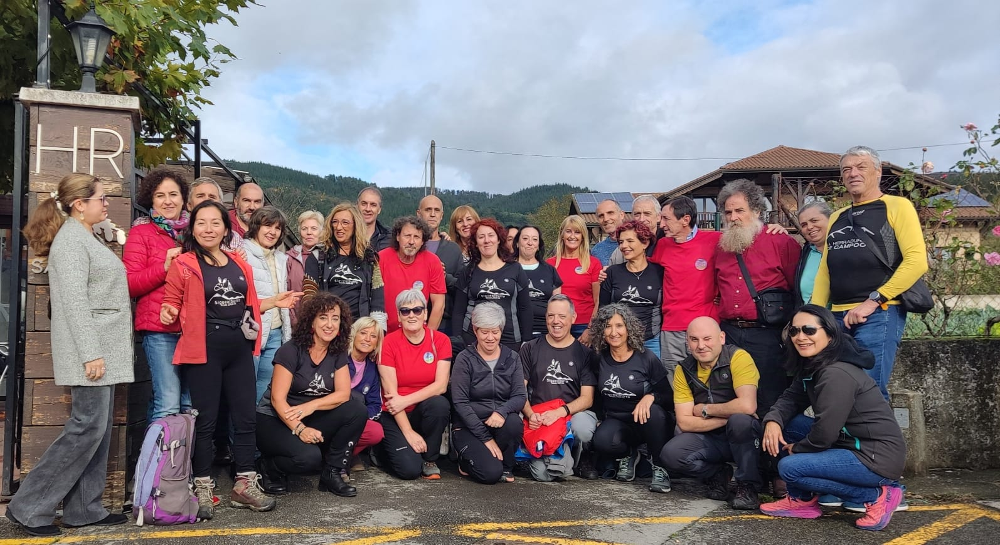

Origen
En el año 2004 varias chicas intentaron entrar en un grupo de senderismo de Bilbao y alrededores que se organizaba a través de un foro de internet. Pusieron varios mensajes, pero no obtenían respuesta. Así que, tras el verano, se enviaron mensajes entre ellas para hacer una quedada y conocerse en el bar de la estación de tren de La Concordia, donde decidieron realizar una primera ruta, de Plentzia a Armintza, un domingo a finales de octubre.
Tras haber recorrido unos kilómetros de dicha ruta, encontraron un burro en medio del camino. Tardaron un rato en pasarlo porque no sabían por dónde hacerlo sin correr riesgo de sufrir una coz. Hicieron unas cuantas risas. Unos kilómetros más adelante llegaron al punto final de la ruta, Armintza, donde tomaron algo en un bar y comentaron que habría que ponerle un nombre al grupo. No tenían muy claro cuál y, después de varias propuestas, una de ellas dijo: “¿por qué no nos llamamos Siguealburro.com?”, acordándose del encuentro con el burro y de las risas que habían hecho y pensando en que la comunicación se realizaría a través de internet. Les pareció original y el nombre fue aprobado por unanimidad. Popularmente se conoce a los miembros del grupo como “burritos”.
Historia
Durante la primera década de funcionamiento, el grupo se organizó en torno a un foro de internet (el que más se utilizó fue miarroba.com). En él se convocaba a las rutas de cada domingo y a otros eventos. Para confeccionar cada calendario trimestral, los miembros interesados enviaban propuestas de rutas por correo electrónico y se celebraba una reunión en el bar Covent Garden (Bilbao), donde se decidía entre los asistentes qué domingo se hacía cada ruta de la lista de rutas propuestas.
En 2014, una vez que dejó de funcionar el foro, se creó un grupo de WhatsApp para realizar dichas funciones. Más adelante se creó una página web que permite consultar el calendario, el detalle de la ruta de ese domingo y un histórico de las rutas realizadas. Además existió una app para dispositivos Android, que hoy en día está desactualizada. Actualmente las propuestas de nuevas rutas se realizan a través de un formulario web.
Los primeros años del grupo se quedaba siempre los domingos a las 8:30 en la calle Luis Briñas, en el aparcamiento situado en uno de los laterales de la estación de autobuses de Bilbao (Termibus). Los miembros cafeteros quedaban 20 minutos antes para tomarse el café en el cercano hotel Stadium.
En la actualidad cada promotor o promotora ajusta la hora y lugar de quedada según la ruta. Pero lo habitual es que quedemos los domingos al comienzo de la calle Capuchinos de Bilbao entre las 8:30 y las 9:00.
La media de asistentes a una ruta dominical está entre 15 y 20. Ha habido épocas en que este número se ha superado con creces y otras en las que solo han asistido entre 1 y 5 participantes (lo que hizo temer la desaparición del grupo).
Lo que ha sido una constante y caracteriza al grupo es que es abierto y acogedor: casi cada domingo participa alguna nueva persona en la ruta, que nos ha conocido buscando grupo de senderismo o montañismo o a través de algún miembro. Siempre ha habido buen ambiente y compañerismo. A pesar de que es un grupo sin una organización definida, siempre ha funcionado gracias a las aportaciones voluntarias de miembros que se han encargado de diversas funciones a lo largo del tiempo. Todo esto ha permitido que el grupo perdure hasta nuestros días. Y esta historia no se ha acabado ni mucho menos; sigue escribiéndose cada domingo.
Tradiciones
El día de los montañeros clásicos.
Se trata de un día en que hacemos la ruta vestidos con la indumentaria clásica montañera de mitad del siglo XX (con lana, pana...), desprendiéndonos del actual goretex y fibras modernas.
Subida al Gorbea por fin de año.
El domingo más próximo al 31 de diciembre, subimos al Gorbea para celebrar el fin de año. Brindamos con una copa de cava y llevamos dulces navideños para compartir.
Subida al Pagasarri el 25 de diciembre y 1 de enero de cada año.
Para celebrar el día de Navidad y el Año Nuevo, solemos subir a todo un monte clásico de Bilbao, el Pagasarri. Cánticos, disfraces, bailes y dulces navideños inundan la salida.
Búsqueda del Belén.
El día 6 de enero buscamos el Belén que coloca el club de orientación Cobidea en un punto indeterminado del monte.
Salidas de fin de semana a diferentes montañas y con una fiesta temática.
Durante varios años se han programado salidas de fines de semana por Pirineos, Picos de Europa, etc.
Y también algunos otros fines de semana se han organizado salidas en las que, aparte de hacer monte, hemos celebrado fiestas con alguna temática específica: fiesta del rock, fiesta del chupete (disfrazados de niños), brujas, sevillanas...
Fusión de monte y canto.
A partir de 2011, un grupo numeroso de burritos empezó a cantar en el coro Sanfran Korue, y así mismo coralistas del Sanfran empezaron a venir a las rutas. Desde entonces se han hecho actuaciones conjuntas del coro y Siguealburro en la cueva de la Magdalena, y varios años se ha subido a Urbia y se ha cantado en el Santuario de Arantzazu.
Celebración del aniversario anual.
A últimos de octubre de cada año, celebramos la fundación del grupo. Hacemos una salida montañera corta y una comida, habitualmente en el restaurante Ruperto de Amurrio.
 2024. Celebración del 20 aniversario.En el 2024, fue una celebración muy especial. El grupo celebraba el 20 aniversario de su fundación. Fue una celebracón muy concurrida, donde participaron miembros antiguos y recientes.
Se compuso y cantó la siguiente canción (La senda del Burrito) para la celebración.